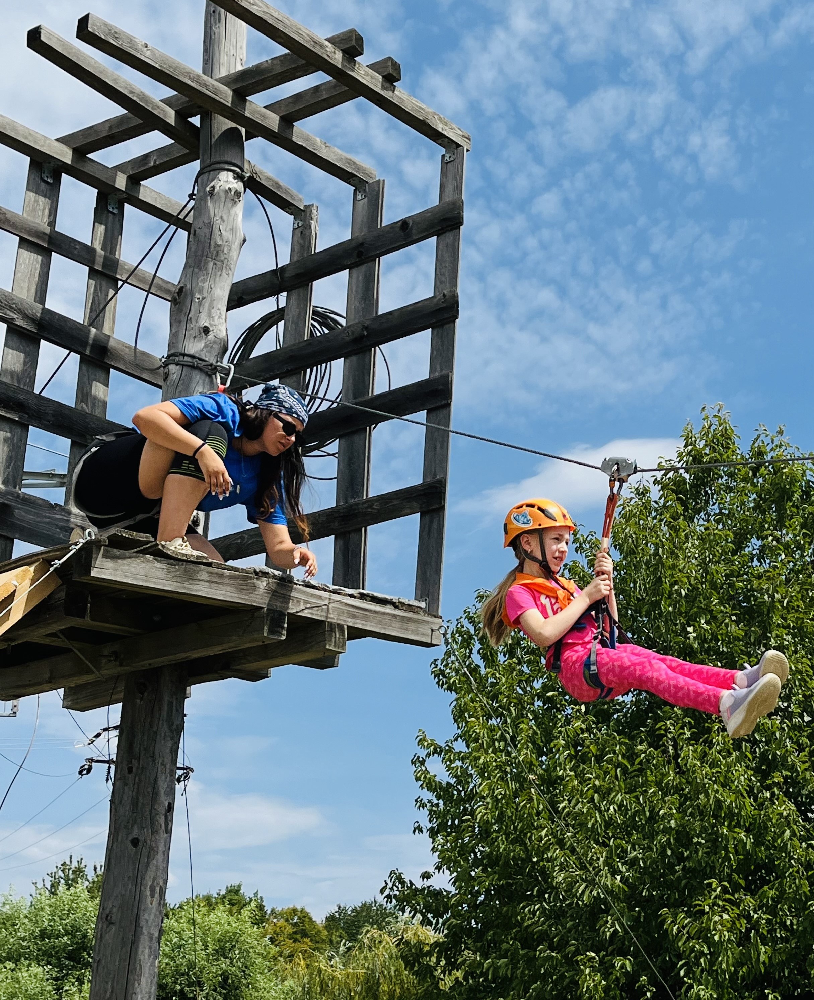

Anghel Alexandra

About Me
Dedicated and goal-oriented professional with a proven ability to adapt and excel in dynamic environments.Equipped with strong problem-solving skills,
attention to detail, and a collaborative mindset.Passionate about delivering high-quality results and continuously improving processes. Looking to leverage
my expertise and skills to contribute effectively to team success and achieve organizational goals.
Education
- HERMES Economic High School - 2017/2021
- Academy of Economic Studies (ASE), Bucharest - 2021/2021
Faculty of Business and Tourism
- University of Bucharest - 2022/curently
Faculty of Business Administration
Specialization:Economic Cybernetics
Work experience
A. T. G. R. , Bucharest - Animator
June 2019 - August 2024
(5 years and 3 months)
- A.T.G.R. is a youth association that promotes mountain tourism and ecology.
- It organizes environmental protection projects and mountain events such as Montaniada (now in its 6th edition).
- The association also hosts adventure camps for children, teambuilding activities, and many other events with and for young people.
- Through my involvement, I developed several social skills and learned to communicate with different people in various situations.
- I gained experience working in a team.
- It was my first job, and although it was challenging, I adapted quickly and it became a wonderful experience.
- I worked with children aged 8 to 17, as well as their teachers and chaperones.
World-class, Bucharest - Receptionist
November 2023 - June 2024
(8 months)
- Pleasant Environment: The workplace was enjoyable and positive.
- Wonderful Team: I worked with a great team of colleagues.
- Friendly Personal Trainers: The personal trainers were approachable and offered valuable advice.
- Receptionist Responsibilities:
- Managed client check-ins.
- Provided information about the gym’s products and services.
- Ensured the gym was well-maintained.
Christina Hotel, Bucharest - Receptionist
August 2022 - November 2022
(4 months)
- Welcomed Guests: Greeted clients upon arrival and handled check-in and check-out procedures.
- Managed Calls: Answered phone calls and provided guidance to both current and incoming guests.
- Provided Information:
- Detailed knowledge of hotel facilities.
- Information about the restaurant, menu, and room service.
- Accurate details about local attractions and places of interest.
- Handled Reservations:
- Assisted with bookings for services beyond the hotel’s offerings, such as restaurant reservations.
- Arranged transportation to and from the airport.
- Facilitated car rentals.
Skills
Communication Skills
- Active listening
- Feedback and Improvement
Project Management
- Time management
- Task prioritization
Problem-Solving Skills
- Analytical thinking
- Creativity
- Conflict resolution
Leadership and Teamwork
- Team collaboration
- Leadership and motivation
Customer Service
- Client relations
- Problem resolution
- Empathy and patience
- Handling complaints
Adaptability
- Flexibility in changing environments
- Learning new skills quickly
- Embracing change
Organizational Skills
- Planning and coordination
- Attention to detail
- Multitasking
Other